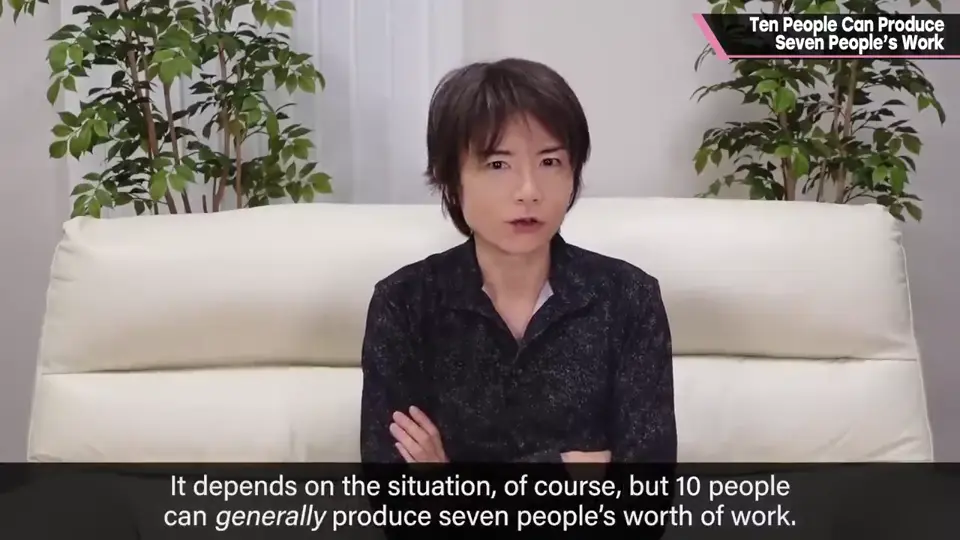
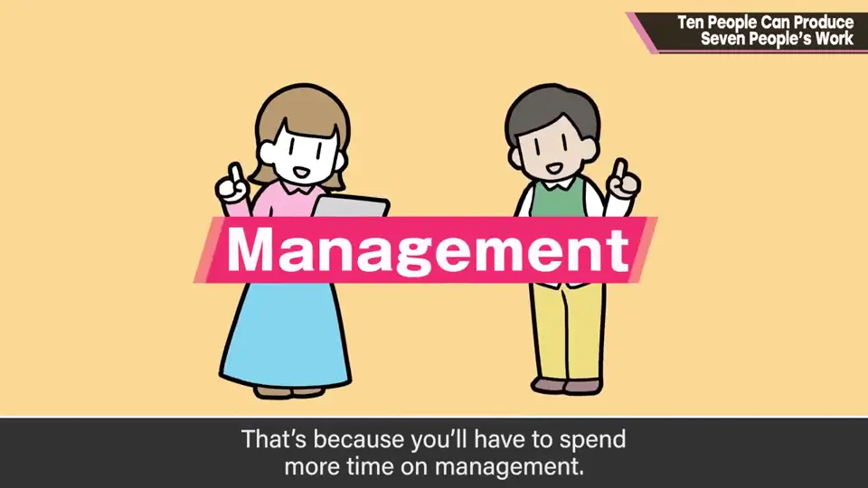
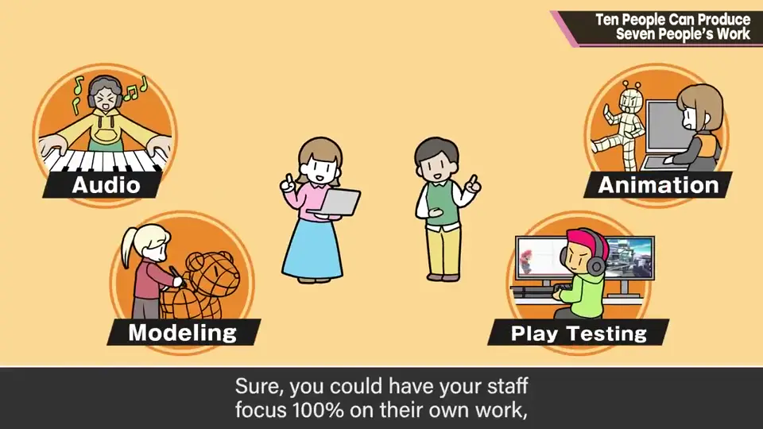
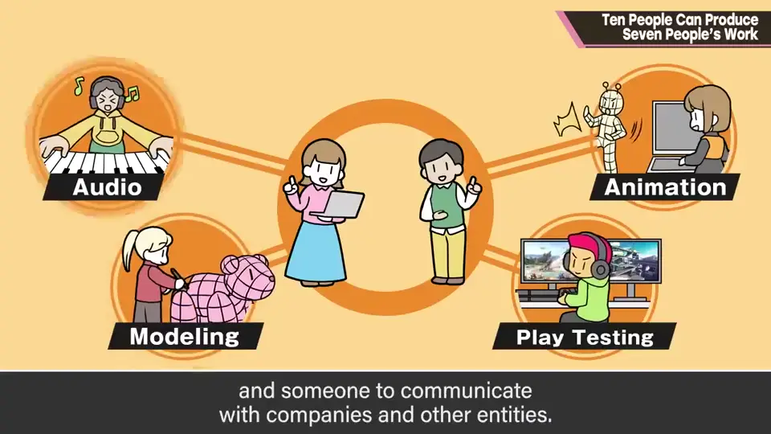
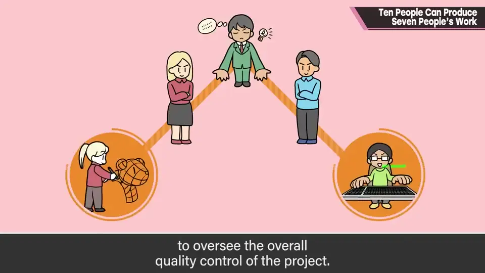
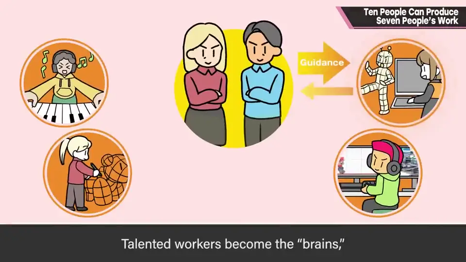
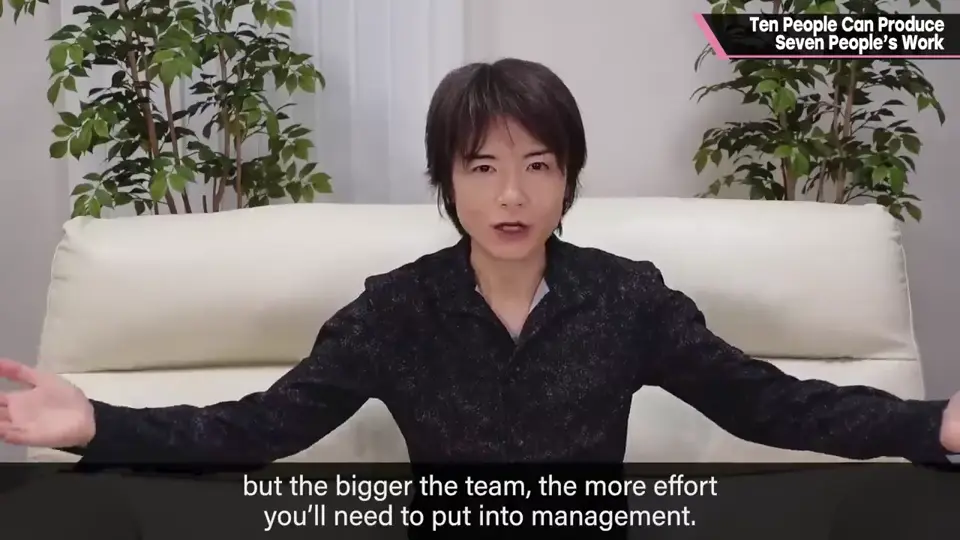
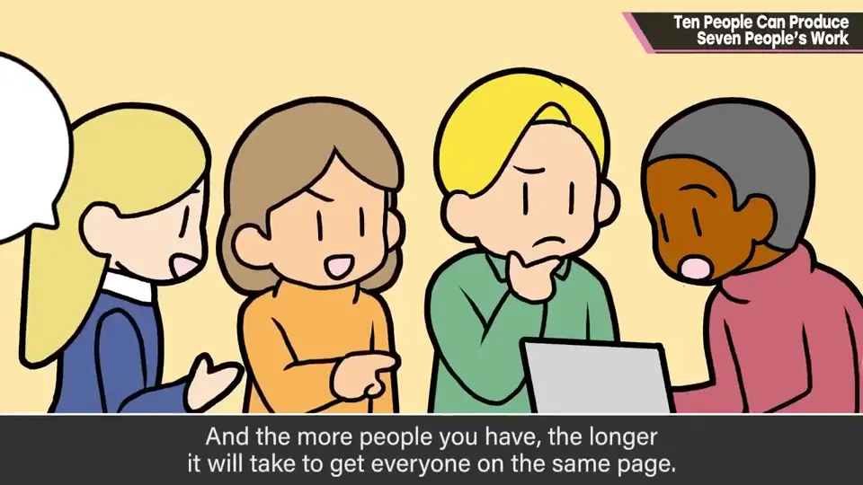
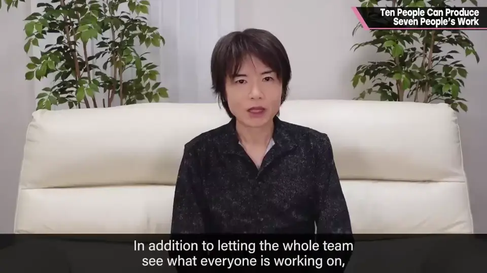

E-4 十个人只能做出七个人的工作
原标题：Ten People Can Produce Seven People's Work
▶ 原视频：https://youtu.be/1-iZFmenARA本集的日语字幕下载被 YouTube 限流（HTTP 429），内容依据视频画面内的英文字幕整理。

速览
「10 人的开发团队能产出 10 人份的工作」并不完全正确。视情况而定，但10 个人一般只能产出约 7 个人份的工作——因为必须花更多时间在管理上；简而言之，运营团队本身就需要工作。当然可以让员工 100% 专注于自己的工作，但那就不太算「团队」了。至少需要有人管理工作量、有人与公司等外部沟通，还需要决定产品创意方向的监修者。这有时由总监直接负责，但在更大的项目里，可能会有首席设计师或首席程序员来监督项目整体的品质。当一位熟练的工作者转为领导，往往无法把平常的产出放大到更大规模；当有经验的创作眼光转到管理侧，显然就失去了他本来会产出的那一份——但团队就是这样：有才能的人成为「大脑」，决定创意方向、维持品质，同时让团队朝目标前进。只有几个人的小项目，每个成员也许能照常贡献；但团队越大，越需要在管理上投入精力，人越多，让所有人达成共识也越费时——不只是创意方面，工具、安全和规则都需要设定并被理解。为了让成员获得整个项目的俯瞰视角，他推荐举办各小组发表成果的会议：例如角色团队展示在某段时间完成的角色。这除了让全队看到彼此在做什么，还能培养发表能力，加深「在为别人做东西」的意识，非常推荐。最终，顾客会拿到你的游戏——所以在那之前让很多双眼睛看过，一起打磨产品吧。
1. 10 人 ≈ 7 人份 0:03
「10 人的开发团队能产出 10 人份的工作」——这并不完全正确。


因为必须花更多时间在管理上。简而言之，运营团队本身就需要工作。
2. 团队需要的管理 0:25
当然可以让员工 100% 专注于自己的工作，但那就不太算是「团队」了。


至少需要有人管理工作量、有人与公司及其他外部单位沟通；还需要决定产品创意方向的监修者。
这有时由总监直接负责；但在更大的项目里，可能会由首席设计师或首席程序员来监督项目整体的品质。

3. 优秀的人成为「大脑」 1:01
熟练的工作者转为领导后，往往无法把平常的产出放大到更大规模。有经验的创作眼光转到管理侧，显然就失去了他本来会产出的那一份。

4. 团队越大，管理越费力 1:30
只有几个人的小项目，每个成员也许能照常贡献；但团队越大，就越需要在管理上投入精力。


人越多，让所有人达成共识就越费时。而且不只是创意方面——工具、安全和规则，也都需要设定并让大家理解。
5. 推荐：小组成果发表会 1:57
为了让成员获得整个项目的俯瞰视角，樱井推荐举办各小组发表成果的会议：例如角色团队展示他们在某段时间完成的角色。

最终，顾客会拿到你的游戏。所以在那之前，让很多双眼睛看过，大家一起打磨产品吧。
自测题
1. 为什么 10 人团队一般只能产出约 7 人份的工作？
团队需要花时间在管理上：工作量管理、对外沟通、方向监修等。 0:03
2. 优秀的人转做领导会带来什么取舍？
失去其个人产出，但他成为团队的「大脑」，决定方向、维持品质并推动团队。 1:01
3. 樱井推荐的成果发表会有什么好处？
让全队看到彼此的工作、培养发表能力、加深为他人制作的意识。 1:57